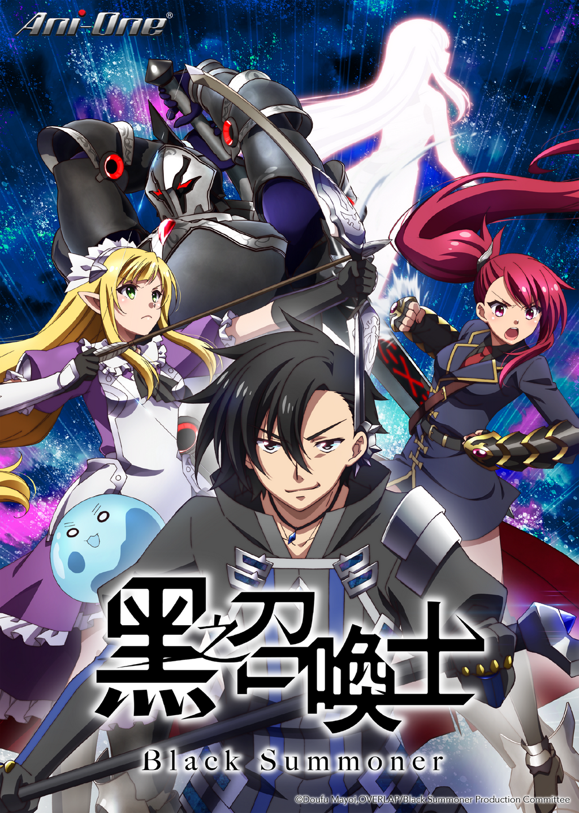

AnimeInterester
黑之召喚士

故事簡介
“這是第一次呢，竟然讓我這個神來當他的手下。” 凱爾文醒來後發現自己轉生到了異世界。而且，他將異世界嚮導同時也是那個世界的女神認作了自己的屬下。 用前世記憶作為交換，得到超高等級的召喚技能與魔法技能的凱爾文，開始了冒險者的生活。因為自身追求強敵的性格和遠超新人的戰鬥數值，瞬間變得引人注目。身披黑色長袍的戰鬥狂主人公聚集了同伴，變身為最強冒險者，酣暢淋漓的戰鬥冒險就此拉開帷幕！
製作人員
原作：迷井豆腐
角色原案：黒銀（DIGS）/ ダイエクスト
原作コミック：天羽銀
導演：平池芳正
系列構成：平池芳正
角色設計：大島美和
次要角色設計：大橋幸子
怪獸設計：稲田航
美術設定：加藤賢司
色彩設計：鈴木依里
攝影監督：内田奈津美
剪輯：松本秀治
CGI顧問：後藤浩幸
CGI導演：中村玲菜
音響監督：本山哲
音樂：未知瑠 / Yuria Miyazono
音樂制作：フライングドッグ
音響制作：ブシロードムーブ
製作：黒の召喚士製作委員会
聲優名單
凱爾文：内山昂輝
艾斐爾：石見舞菜香
玫璐妃娜：上田麗奈
克洛索：蘭笛
傑拉爾：秋元羊介
莎拉：鈴木實里
莉歐：宮本侑芽
安潔：稲垣好
庫萊夫·提拉傑：蒼井翔太
傑魯·特萊申：斧篤志
阿茲葛拉德·特萊申：古川慎
修托菈．特萊申：菱川花菜
托利斯坦·法澤：石田彰
各集標題
| 話數 | 標題 |
|---|---|
| 1 | 失去記憶的轉生者 |
| 2 | 黑靈騎士 |
| 3 | 與公會的秘密協定和奴隸少女 |
| 4 | 惡魔 |
| 5 | 魔王之女 |
| 6 | 米與盜賊與勇者 |
| 7 | 與勇者們的對戰 |
| 8 | 回歸帕斯與女神降臨 |
| 9 | 勇者召喚 |
| 10 | 新的家庭 |
| 11 | S級昇格試驗 |
| 12 | 另一個轉生者 |